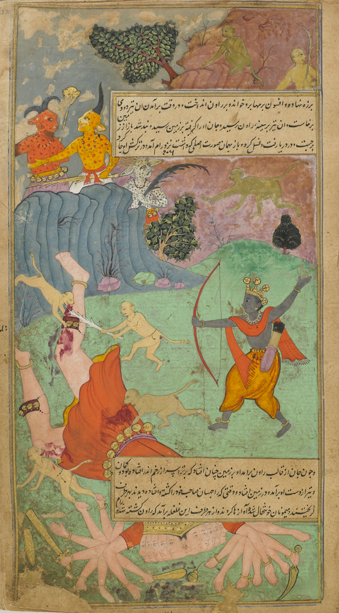

~3 minute read · home puja
रावण वध — जब धर्म ने दशानन के अहंकार को हराया
Ravana’s fall — when dharma defeated ten-headed pride
चरमोत्कर्ष खोज: राम ने लंका-युद्ध का अंत कैसे किया।
The climax search: how Rama finally ended the Lanka war.

कथा · The story
दिनों के युद्ध, वीर-पतन, विभीषण की सलाह के बाद राम रावण से भिड़ते हैं। ब्रह्मास्त्र और दिव्यास्त्र उस दशानन का अंत करते हैं जिसने सीता हरी और धर्म ठुकराया। विभीषण राजा बनते हैं। कई कथनों में सीता की अग्नि-परीक्षा। विजय अयोध्या-पथ और दीपावली के दीप खोलती है।
After days of war, fallen heroes, and Vibhishana’s counsel, Rama confronts Ravana. Brahmastra and divine weapons end the ten-headed king who abducted Sita and scorned dharma. Vibhishana is crowned. Sita’s agni-pariksha traditions follow in many tellings. Victory returns the path toward Ayodhya — and Diwali’s lamps.
विस्तृत कथा · Fuller telling
A longer retelling for readers who want more detail — optional; the short story above is enough for a quick home reading.
रावण शिव-भक्त भी याद किए जाते हैं — महाकाव्य जटिलता देता है। घर का पाठ: संयमहीन ज्ञान अत्याचार बनता है। दीपावली ऐसे अंधकार के बाद लौटी ज्योति के रूप में मनाएँ।
Ravana is also remembered as a great Shiva devotee — complexity the epic allows. Home lesson: knowledge without restraint becomes tyranny. Celebrate Diwali as return of light after such darkness.
क्यों · Why this ritual
दीपावली / दशहरा पर परिवार संग पाठ।
Diwali / Dussehra reading with family.
Takeaway for home
Pride that steals another’s dignity falls — even if it knows the Vedas.
Continue · आगे पढ़ें
Common questions · सामान्य प्रश्न
रावण वध — जब धर्म ने दशानन के अहंकार को हराया
दिनों के युद्ध, वीर-पतन, विभीषण की सलाह के बाद राम रावण से भिड़ते हैं। ब्रह्मास्त्र और दिव्यास्त्र उस दशानन का अंत करते हैं जिसने सीता हरी और धर्म ठुकराया। विभीषण राजा बनते हैं। कई कथनों में सीता की अग्नि-परीक्षा। विजय अयोध्या-पथ और दीपावली के दीप खोलती है।
Ravana’s fall — when dharma defeated ten-headed pride
After days of war, fallen heroes, and Vibhishana’s counsel, Rama confronts Ravana. Brahmastra and divine weapons end the ten-headed king who abducted Sita and scorned dharma. Vibhishana is crowned. Sita’s agni-pariksha traditions follow in many tellings. Victory returns the path toward Ayodhya — and Diwali’s lamps.
क्यों यह रीति / Why this ritual?
दीपावली / दशहरा पर परिवार संग पाठ।
घर के लिए takeaway?
Pride that steals another’s dignity falls — even if it knows the Vedas.
Feedback · सुधार
Help us validate this page: suggest a correction, add a detail, or highlight something useful for home puja readers.
Feedback is emailed to TirthaYatra for editorial review. It is not published live automatically (safer for quality and ads policy). You can also keep a personal copy on this device.